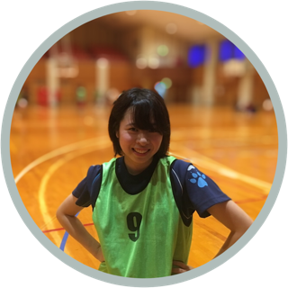
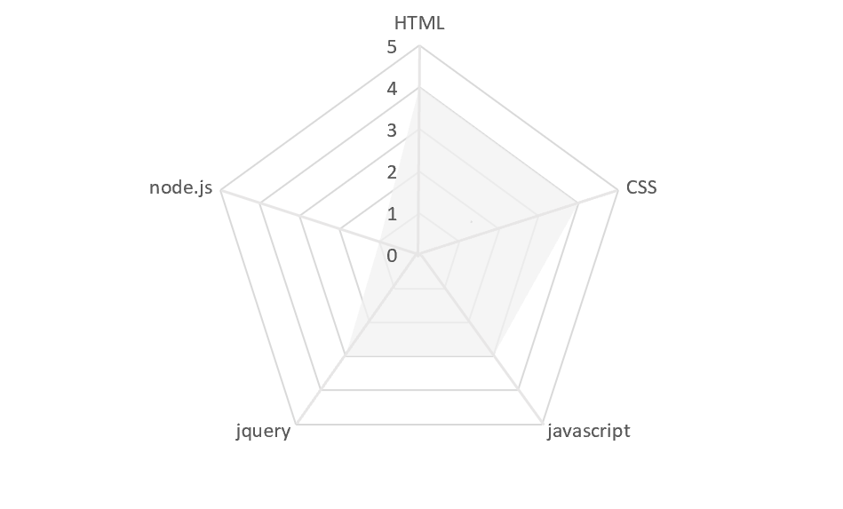
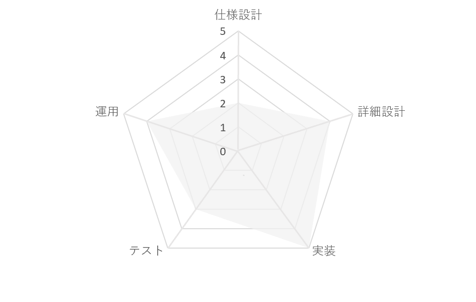
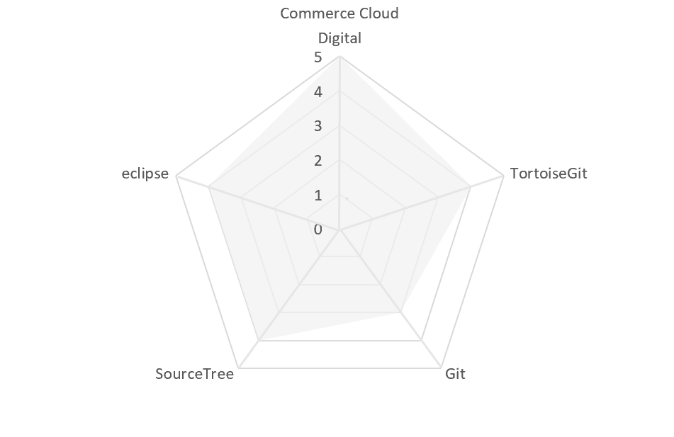

ABOUT ME

大学卒業後、一貫して業務系・組み込み系・Web サイト制作などのシステム開発などを行う会社にてプログラマーとして従事。 アパレルECサイトの開発・運用・保守が中心。 チーフとして自分の担当分の開発を行いつつプロジェクト全体の進捗状態を確認しながら他のメンバーの進捗管理や フォローを行いプロジェクト全体の精度向上に貢献した経験があります。 更なるスキルアップを目指して、AWS、Photoshop、Vue.js、React.jsなどの学習にも取り組んでおります。
大学卒業後、一貫して業務系・組み込み系・Web サイト制作などのシステム開発などを行う会社にてプログラマーとして従事。 アパレルECサイトの開発・運用・保守が中心。 チーフとして自分の担当分の開発を行いつつプロジェクト全体の進捗状態を確認しながら他のメンバーの進捗管理や フォローを行いプロジェクト全体の精度向上に貢献した経験があります。 更なるスキルアップを目指して、AWS、Photoshop、Vue.js、React.jsなどの学習にも取り組んでおります。


